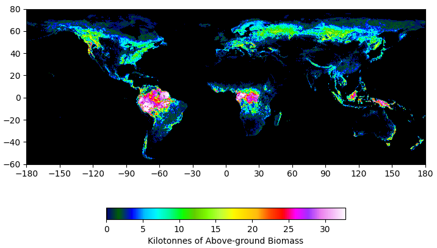

In preparing this installment, I realized I mischaracterized a semantic pivot in a previous issue, the one where I criticized the new wave of carbon capture technoacronym, BiCRS 1 . Specifically, I asked, “What happened to ‘utilization’?” The truth is that BiCRS doesn’t ignore utilization. It obfuscates it. Here’s the published definition:
BiCRS is defined 2 as a process that:
-
Uses biomass to remove CO2 from the atmosphere,
-
Stores that CO2 underground or in long-lived products, and
-
Does no damage to—and ideally promotes—food security, rural livelihoods, biodiversity conservation and other important values.
So, carbon can be “used” provided it is used to create “long-lived products” for various non-destructive, socially-acceptable purposes. The recasting of BECCS as BiCRS avoids the awkward problem that using captured carbon for energy means that the carbon is just cycled back into the atmosphere. Further, energy tends to have low economic value—the source has to be “cheap enough to burn,” a key feature of geologic carbon. By postulating more valuable “products” than fuel, BiCRS makes its technoeconomics less distasteful. Nevertheless, I’m warming to the concept.
Last time, we ended with the perhaps surprising observation that the carbon capture efficiency of a cultivated sugarcane field is higher than mature tropical rainforests. The difference is not insignificant; sugarcane looks to be about twice as absorptive. The question at hand, now, is, “What would happen if the mature rainforest were clearcut and the biological carbon entirely removed from the Earth’s carbon cycle?” This solution would accomplish “indirect air capture” by removing biological carbon from the system in the long run but would reduce photosynthetic carbon capture in the short run.
Naturally, it matters what we do with the harvest. If it were burned, for example, that’d make the whole process pointless. Alternatively, if it were plowed under or composted, some unspecified percentage of the captured carbon would be released over time. For this piece, let’s assume that the carbon is deleted from the system to be regenerated naturally over time through regrowth or land use for agriculture. If such a simplification makes you uncomfortable, you can imagine it’s buried in abandoned coal mines. Regardless, from a modeling perspective, it doesn’t really matter. Any post-harvest process can be described mathematically as a “retention efficiency” since a fraction between all and none of the carbon will be retained.
This framing puts us in an interesting space to consider solutions. The problem, at its core, is that humans have been releasing energy from ancient sources for the past few centuries. I’ve referred to these sources (consistently, I hope!) as “geologic carbon” rather than the more common but less accurate “fossil fuels”. From an engineering perspective, the origin of these sources is ancient photosynthesis. Energy storage occurred when photosynthesis combined ancient sunlight and carbon dioxide (albeit slowly and inefficiently) in the first place. The proposal is to reverse the resource extraction process by removing carbon from the biosphere rather than the atmosphere . Then, if we plant more efficient crops, we can pull more carbon out of the air yearly. If we overcompensate, nature can be readjusted through regenerative forestry.
Let’s look at the dataset I identified the last time 3 that tabulates above-ground biomass, as observed from space and derived from models. I’m not going to examine the models used critically. Instead, I’m going to use the table to determine whether such an approach has a chance of being practical. The dataset is high-resolution, with each data point equal to 1 hectare, and the values are in Mg per hectare or metric tons in each modeled pixel. The global distribution looks like this:

I’ve reduced the resolution of the data such that each pixel is about a square kilometer (the figure is 43,200 pixels wide; Earth’s diameter at the Equator is 40,075 km), but I haven’t made all the geographic adjustments needed to normalize the data by surface area, so it’s presented as-is. But, you should note that a square kilometer of rainforest (1,000,000 square meters) can support about 25,000 tonnes of biomass.
The total amount of biomass in the database is an astounding 820 gigatonnes, and according to the database’s description, it is dry biomass, which is 40-45% carbon. Earth’s biomass consequently projects about 1,200 gigatonnes (1.2 teratonnes, or 1.2 petagrams) of fixed carbon dioxide above the surface. According to Wikipedia , each ppm is the same as 7.82 gigatonnes of CO2, so to go from 420 ppm to 280 ppm (the preindustrial baseline), we would need to bury more than half of the Earth’s above-ground biomass. But, to balance our annual increase of 1-2 ppm (in other words, “engineered net zero”) would “only” require the removal of about ten gigatonnes of above-ground biomass. In the rainforest, at 25 kilotonnes per square kilometer, this works out to clearing about 400,000 square kilometers (approximately 7% of the Amazon rainforest) to balance emissions from the combustion of geologic carbon. That’d be hard but not impossible. If that makes you cringe, you should have known that the scale of the problem was enormous before we started. These numbers here are rough, but they could be verified in practice so that future directions could be adjusted based on data rather than conjecture. Furthermore, we have the tools (Eddy Flux Covariance) to measure the consequences directly.
What happens if we go too far? Literature estimates 4 suggest that a rainforest ecosystem can recover quickly, but regaining biomass takes about a century. But, there’s a significant concern about running out of forest to cut down before we get to zero if renewable energy sources don’t come online as quickly as projected--at 7% per year, that's only 10-15 years of harvest. Alternatively, if sugarcane were purposefully replanted on the cleared land, at least three factors would come into play. First, the natural ecosystem wouldn’t need to regrow to see the benefits of agriculture, and we would be able to control the portion of the ecosystem that respires (preventing the release of CO2). Second, sugarcane is an economically valuable crop, and many renewable chemicals are accessible from sugar. Increasing and automating sugarcane production at such a large scale would drive down costs and enable us to turn sugars into durable goods. Third, with more land doing C4 photosynthesis, less of the rainforest would need to be cultivated to realize the benefits.
That’s a ballpark, back-of-the-envelope calculation, and it makes a lot of oversimplified assumptions about the near-term consequences. But it does suggest that there is an alternative path forward.
Next time, I’ll look at the process(es) involved for two features (if I can find data). First, what is the correct “retention efficiency” number? It’s not one, and it’s not zero. Second, how much additional CO2 is released when 400,000 square kilometers of rainforest is taken out of commission?
Poorter et al., “Multidimensional tropical forest recovery”, Science 374 , 1370-1376 (2021)